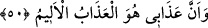

50. Benim azabımın elem verici bir azap olduğunu da bildir.
“Benim,” tevbe ve istiğfardan yüz çevirenlere yapacağım “azâbımın elem verici bir
azâb olduğunu da bildir.” Bu ifâde, ‘Ben, falanca özellikleriyle anılan kimseyim!’
ifâdesinin bir benzeridir. Yâni onlara, benim azabımın o elem verici, çetin azaptan
başka bir şey olmadığını haber ver. Cenâb-ı Hakk kendi zâtını ‘azâb edici’ değil,
‘bağışlayıcı’ ve ‘esirgeyici’ olarak tavsif etmiştir. Önceki âyetteki ifâdelere mukâbil bu
âyette “Ben azâb edici ve elem vericiyim.” buyurmamıştır. Bu durum, O’nun bağışlayıcı
ve esirgeyici olmasının zâtının gereği olduğunu, azâb etmenin ise hariçten gelen
zorunluluk sebebiyle gerçekleştiğini bildirmektedir. Böylelikle lûtf-i ilâhî ile ilgili vaad
tercih edilmiş, affetme sıfatı ise pekiştirilmiş olmaktadır.
Gerçi benim cürmüm sayıya sığmaz,
Senin ‘rahmetinin gadabını geçmesi” ondan ziyâdedir.
Azab görmezse şaşılacak bir şey yoktur,
İşi gücü günah işlemek olanları bağışlarsan.
et-Te’vîlâtü’n-Necmiyye’de şöyle denilir: Âyet işâret etmektedir ki kendilerini
Allah’ın kulluğuna tahsis edenler, O’nun dışındaki hevâ, dünyâ, ve ukbâ gibi tüm
varlıklara (mâsivâ) kul olma boyunduruğundan hür olanlardır. Onlar, O’nun lütuf ve
rahmet sıfatlarının mazharlarıdır. Azâb ise hevâ, dünyâ ve mâsivânın kulu olanlara
mahsustur. Onlar da O’nun kahr ve izzet sıfatlarının mazharlarıdır.
Âyetteki başka bir işâret şudur: Ubûdiyyet havasında ve rubûbiyyet fezâsında seyr
edenlerin seyri ve tayr edenlerin tayerânı (uçuşu), ancak -biri diğerinden fazla ya da
eksik olmaksızın, tam bir i’tidâl üzere- havf ve recâ (korku ve ümid) ayakları üzerinde,
üns ve heybet kanatları ile mümkündür.
er-Ravza’da şöyle anlatılır: Yahya (a.s.) Îsâ (a.s.) ile karşılaştı. Îsâ (a.s.)’ın kendisine
tebessüm ettiğini görünce: ‘Bana ne oluyor da emniyetteymiş gibi seni neşeli
görüyorum?!’ dedi. Îsâ (a.s.): ‘Peki bana ne oluyor da seni her şeyden ümidini kesmiş
gibi üzüntülü görüyorum?!’ diye cevap verdi. Bunun üzerine: “Bize vahiy nâzil olana
dek buradan ayrılmayalım.” dediler. Allah onlara: “Sizin Bana en sevimli olanınız,
Benim hakkımda zannı daha güzel olanınızdır.” diye vahyetti. Bir başka rivâyete göre
ise: “Sizin Bana en sevimli olanınız, güler yüzlü ve mütebessim olanınızdır.” diye
vahyetmiştir.
Zekeriyyâ (a.s.), oğlu Yahyâ’nın devamlı üzüntülü, ağlayıp sızlayan, kendisiyle
meşgul biri olduğunu görünce: “Ya Rab, ben senden istifâde edebileceğim bir evlâd
niyâzında bulunmuştum?” dedi. Allah Teâlâ şöyle cevap verdi: ‘Sen onun velî bir evlâd